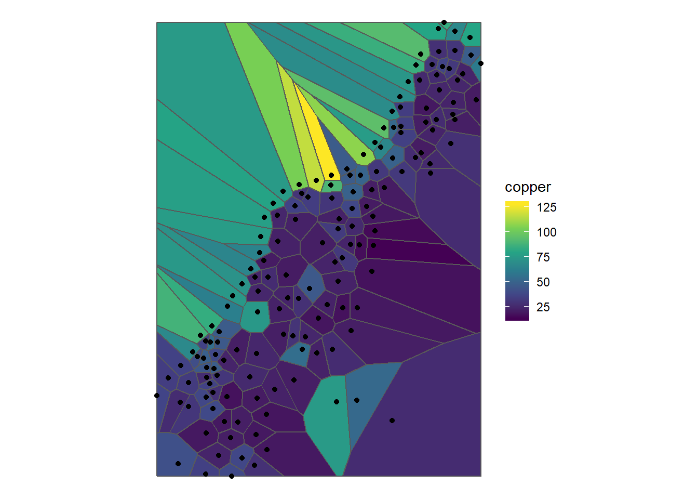
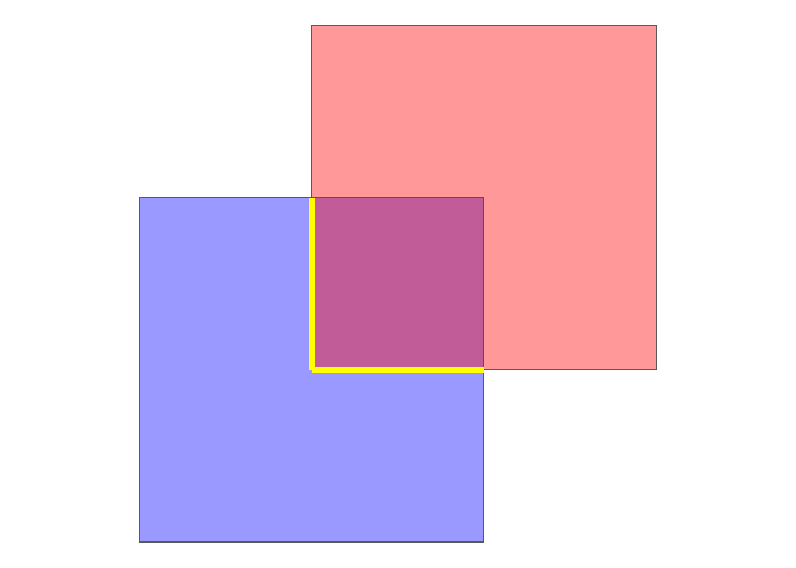

12.1 Binary Predicates and DE-9IM
Binary Predicates check topological relationships betweeen geometries. This can be very practical for data quality questions (e.g. “None of the State borders should ovelap”) or for neighbourhood question (e.g. “which states border the state of Nevada?”).
Lets take the example of a chessboard:

Some topological relationships have specific names. For example, if we want to know which field touch a specific field, the name for this predicate is “touches”. This is implemented in the function st_touches of the packages sf:
So to see which field touch field number 36, we can write the following line of code:
## Sparse geometry binary predicate list of length 1, where the predicate was `touches'
## 1: 27, 28, 29, 35, 37, 43, 44, 45Visually, these are the following fields:

Similarly, there are further named topological relationships. Each of them has it’s own function in R:
- Contains (
st_contains) - Covers (
st_covers) - Intersects (
st_intersects) - Within / Inside (
st_within) - Covered by (
st_covered_by) - Crosses (
st_crosses) - Overlaps (
st_overlaps)
Regarding the visual example above, we can imagine a chess piece placed on field #36. If this figure was a Queen or a King, all of the fields resulting from st_touches are reachable. In terms of contiguity, this is what is typically called the Queen’s or the King’s Case. However, this is might not the relationship that we are looking for: Say we would want to exclude the diagonal fields from our selection, the way a Rook would move in chess. How can we implement this in R?
None of the named topological relationships (binary predicates) above correctly describes this case (touches_but_not_at_edges or shares_boundary would be appropriate). In this case, we can use the Dimensionally Extended 9-Intersection Model (DE-9IM) to precisely formulate the realtionship we are looking for: the Rooks Case.
IN DE-9IM, the intersection of two objects is viewed at three levels for each object: The Interior, the Boundry and the Exterior (\(3^2= 9\), hence the name). These levels mean different things for Polygons, Lines or Points, but let’s just look at the simple case for now, polygons (which is the case for our chess fields). Take the following example

The interior of a polygon is the area inside the polygon. If the two areas overlap (as is the case of blue and red), the result from an intersection would also be a polygon. More formally: The Dimesion of \(I(blue) \cap I(red)\) is an area. Areas get a value of 2, Lines 1 and points 0. If there is no intersection (as is the case in blue and green), the result equals to FALSE.
This was the first of 9 Intersections. Let’s look at the next one:
Interior of blue with the boundry of green:

The resulting object has a dimenion “line”, i.e. 1. Formally: \(dim(I(blue) \cap B(red)) = 1\). Now just for the sake of looking at the third level (Exerior), let’s look at what this looks like:
p2_ls <- st_cast(p2,"LINESTRING")
p2_ls2 <- st_intersection(p1,p2_ls)
ggplot() +
geom_sf(data = p1, fill = "blue", alpha = 0.4) +
geom_sf(data = p2, fill = "red", alpha = 0.4)+
geom_sf(data = st_difference(p1,p2), fill = "yellow", lwd = 2)+
theme_void()
The resulting object is again an area, i.e. 2. Formally \(dim(I(blue) \cap E(red)) = 2\).
If we go through all intersections of Interior, Boundry and Exterior of both geometries, we can denote for each comination what type of dimesion we “allow”. This can be either 0 (for points), 1 (for lines) or 3 (for areas) or TRUE (for either of these), or FALSE (for none of these) or * (for "I dont care).

Why go through all this trouble? Because we would like to specify the rooks case, and none of the named predicates matches. So let’s define the rooks case ourselves:
12.1.1 Rooks Case
If we go throught the all nine combinations of the DE-9IM, this is what defines the rooks case:
| Interior | Boundary | Exterior | |
|---|---|---|---|
| Interior | nothing | don’t care | don’t care |
| Boundary | don’t care | Line | don’t care |
| Exterior | don’t care | don’t care | don’t care |
We can now write this into a string, starting from the top left: F1*
Now that we have this string, we case use st_relate()and specify the string as the pattern we are looking for:
## Sparse geometry binary predicate list of length 1, where the predicate was `relate_pattern'
## 1: 28, 35, 37, 44Which visually gives us this pattern:

Because this was so much fun, let’s also have a look at the opposite, the Bishops Case.
12.1.2 Bishops Case
| Interior | Boundary | Exterior | |
|---|---|---|---|
| Interior | nothing | don’t care | don’t care |
| Boundary | don’t care | Point | don’t care |
| Exterior | don’t care | don’t care | don’t care |
## Sparse geometry binary predicate list of length 1, where the predicate was `relate_pattern'
## 1: 27, 29, 43, 45Visually:
